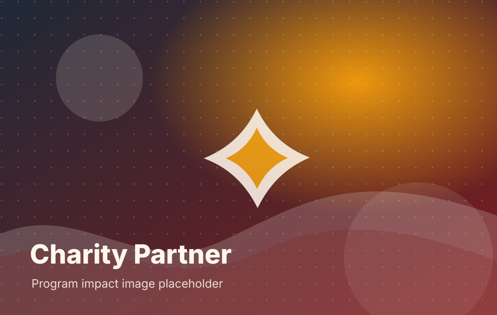
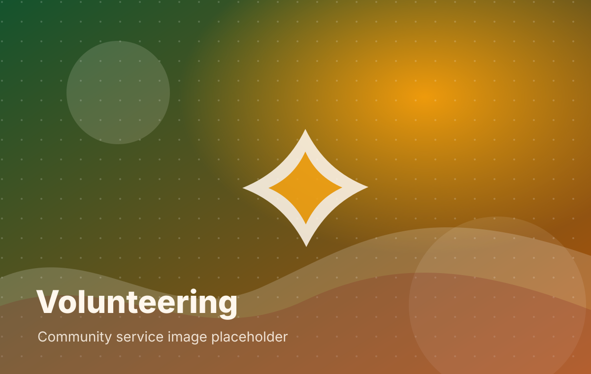

Donated to Charity
Supporting 30+ programs in India and the US that work in education, mental health, women empowerment, and disaster relief.
Impacts
Baybasi uses cultural programs and community participation to support charitable causes, volunteering, and meaningful social impact.
Supporting 30+ programs in India and the US that work in education, mental health, women empowerment, and disaster relief.
100+ volunteers give their time to organize programs and fundraise for causes in the US and India.
Major programs like Holi and Autumn Festival draw over 5,000 people each, while other programs range from 100–500 people.
94% of revenue goes into programs and charitable work; operational overhead is 5% or less.
Past Charities

Youth Mental Health
Audio books for visually impaired students, jobs for teachers and students, and competitive exam preparation.
Housing, training, therapeutic care, and employment support for women with mental health issues.
Volunteering
Baybasi volunteers support event operations, cultural programming, fundraising, logistics, food coordination, media, and charitable service initiatives.
Volunteer Interest Form
Future schedule with signup links.
Photo, event name, date, and impact numbers.
Testimonials
Replace these placeholders with written or video testimonials from beneficiaries, charity partners, members, volunteers, sponsors, and donors.
“Beneficiary or charity partner testimony placeholder.”
Charity Partner
“Member testimony placeholder about community and connection.”
Baybasi Member
“Volunteer testimony placeholder about service and leadership.”
Volunteer
“Sponsor testimony placeholder about brand alignment and goodwill.”
Sponsor
Support with purpose
For individuals, families, and organizations who feel aligned with Baybasi’s mission, support conversations can begin through our Join Us / Contact page.